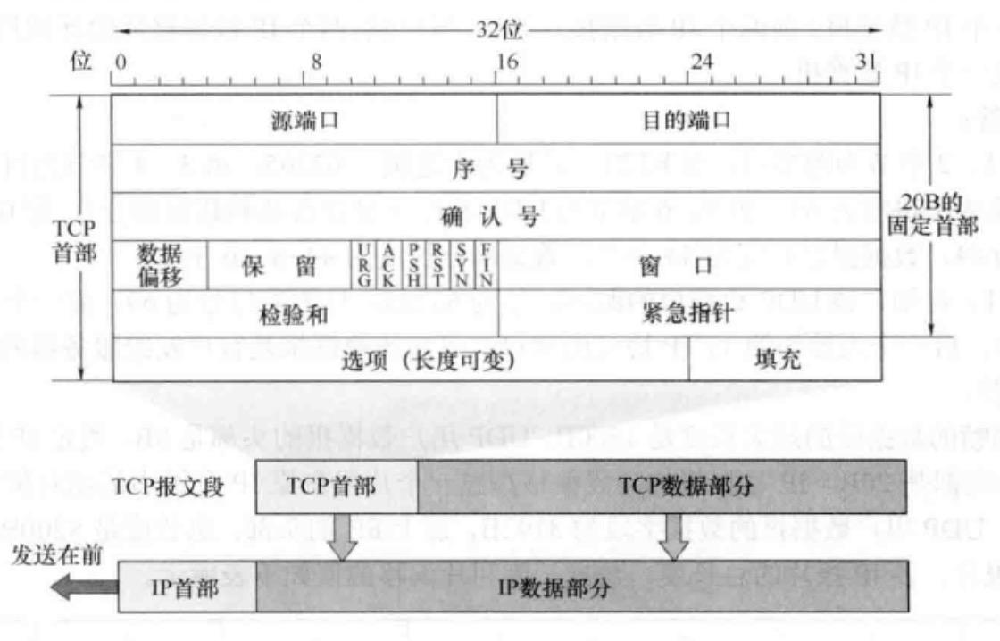
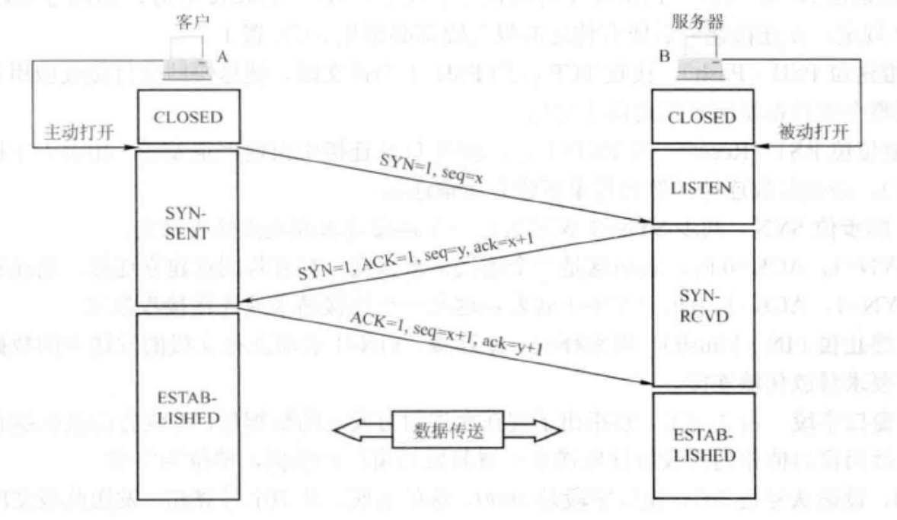
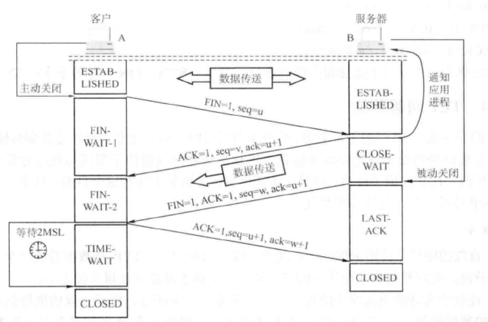
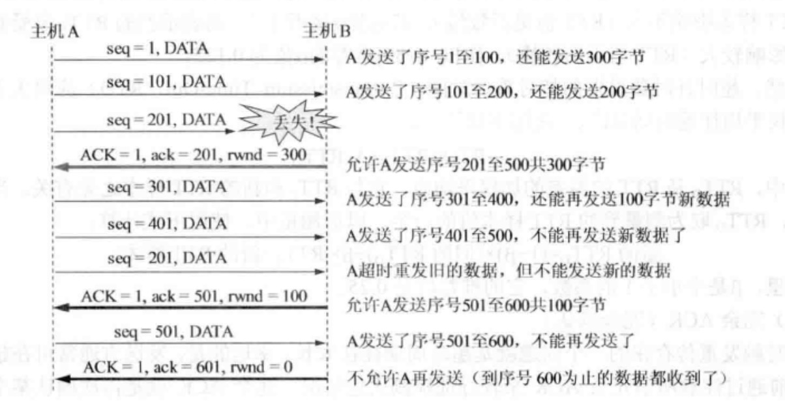
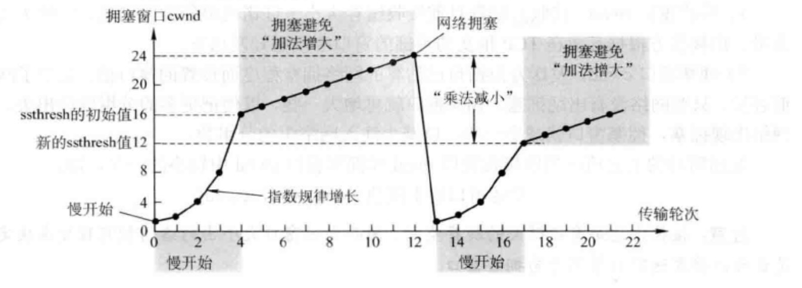
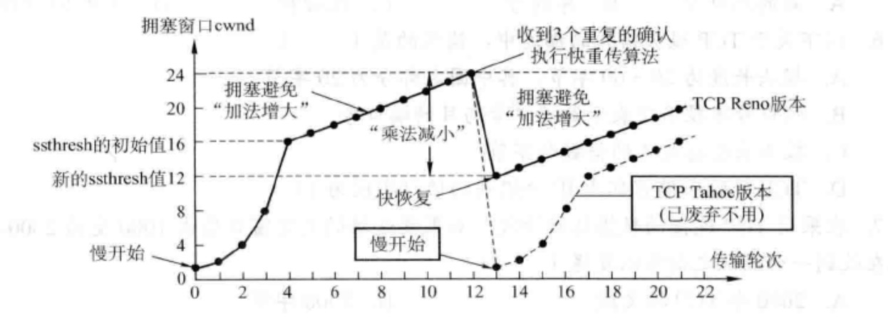

TCP必备知识点梳理
TCP是一种可靠的数据传输协议，主要解决传输的可靠、有序、无丢失和不重复的问题。
###TCP具有以下特点：
- TCP是面向连接的传输层协议
- 每一条TCP连接只能有两个端点，每一条TCP连接只能是点对点（一对一）
- TCP提供可靠的交付服务，保证传送的数据无差错，不丢失，不重复且有序
- TCP提供全双工通信，为此TCP连接的两端都设有发送缓存和接收缓存，用来临时存放双向通信的数据
###TCP报文

简单列一些比较常用的字段意义，方便后面对TCP建立，重传机制的理解：
- 序号字段（sequence number）：因为TCP是面向字节流的，所以TCP连接中传送的数据流中每个字节都编上序号。序号字段指的是本报文所发送数据的第一个字节的序号
- 确认号字段（acknoledgement number）：期望收到对方的下一个报文段的数据的第一个字节的序号，若确认号=N，则表明到序号N-1为止的所有数据都已正确收到
- 确认位ACK: 当ACK=1时确认号字段为有效，当ACK=0为无效
- 同步位SYN：同步SYN=1表示这是一个连接请求或连接接收报文
- 终止位：用来释放一个连接，FIN=1表明此报文段的发送方的数据已发送完毕，并要求释放传输连接
- 窗口字段：支出现在允许对方发送的数据量。如确认号是701，窗口字段是1000，表明从701号算起，发送此报文段的一方还有接收1000字节数据（字节序号是701-1700）的接收缓存空间
###TCP连接管理
TCP是面向连接的协议，每一个TCP连接都会经过三个阶段：连接建立、数据传送和连接释放。TCP连接的两个端口叫做套接字或查看，连接的建立采用客户/服务器方式，主动发送连接建立的应用进程叫做客户机（client），而被动等待连接建立的应用程序叫做服务器（server）。
- TCP连接三次握手

- 客户机首先向服务器的TCP发送SYN=1，表示一个连接请求报文段，随机选择一个起始序号seq=x
- 服务器的TCP收到连接请求报文段，如果同意建立连接，就像客户机发回确认ACK=1,并为该TCP连接分配TCP缓存和变量，并随机产生起始序号seq=y
- 当客户机收到确认报文后，还要想服务器给出确认，并且也要给连接分配缓存和变量
注意：服务端资源是在完成第二次握手分配的，而客户端资源是在完成第三次握手分配的，使得服务器易于收到SYN洪泛攻击
- TCP连接的释放

- 客户机打算关闭连接，向TCP发送FIN=1标志位的连接释放报文段，并停止再发送数据,seq=u等于前面已传送过的数据的最后一个字节的序号加1
- 服务器疏导释放报文段，发出确认号ack=u+1。此时，从客户机到服务器这个方向的连接就释放了，TCP连接处于半关闭状态。但服务器若发送数据，客户机仍要接收，即从服务器到客户机这个方向的连接并未关闭
- 若服务器已经没有向客户机发送的数据，就通知TCP释放连接，此时发送FIN=1的连接释放报文段
- 客户机收到连接释放报文段后，必须发出确认，ACK=1, 确认好ack=w+1,序号seq=u+1。此时TCP连接还没有释放掉，必须经过时间等待计时器设置的时间2MSL后，A才进入到连接关闭状态
###重传机制
导致TCP对报文进行重传的两种情况：超时和冗余ACK
- 超时
TCP每发送一个报文段，就对这个报文段设置一次计时器，只要计时器设置的重传时间到期还没有收到确认，就要重传这一报文段。而重传时间的计算采用了一种自适应算法，略大于加权平均往返时间RTTs，RTTs指的是一个报文段发出的时间到收到确认的时间之间的时间。 - 冗余ACK
超时触发重传存在的一个问题就是超时周期过长。因此，发送方通常可在超时事件发生之前通过所谓的冗余ACK来较好的检测丢包情况。TCP规定当发送方收到对同一个报文段的3个冗余ACK时，就可以认为该报文段已经丢失。
举个栗子：
发送方A发送了序号为1，2，3，4，5的TCP报文段，其中2号报文在链路中丢失，无法到达接收方B，因此3，4，5对B来说是失序报文段。TCP规定当期望序号大的失序报文段到达时，发送一个冗余ACK,指明下一个期待字节的序号。因此，当3,4,5报文到达B,并不是B期望收到的下一个报文，于是B就发送3个1号报文段的冗余ACK,表示自己期望接收2号报文段。这时A收到3个冗余ACK就判断2号报文段已经丢失，这时发送方A可以立即对2号报文执行重传。这种技术通常称为快速重传。
###TCP流量控制
TCP流量控制服务以消除发送方使接收方缓存区溢出的可能性，也就是说流量控制是一个速度匹配服务（匹配发送方的发送速率和接收方的读取速率）。
####原理：
TCP使用窗口机制来实现流量控制的。原理是：在通信过程中，接收方根据自己接收缓存的大小，动态调整发送方的发送窗口大小，即TCP报文段首部中的“窗口”字段rwnd,来限制发送方向网络注入报文的速率。同时，发送方根据其对当前网络拥塞程序的估计确定一个拥塞窗口cwnd，最终A发送的窗口的实际大小是min(rwnd,cwnd)值。
下图是主机A向主机B发送数据，在连接建立时，B告诉A”我的接收窗口rwnd=400(字节)”

###TCP拥塞控制
所谓拥塞控制就是防止过多的数据注入网络中，这样可以使网络中的路由器或链路不致过载。拥塞控制和流量控制都是太那个个控制发送方发送数据的速率来达到效果的。
区别在于：拥塞控制是让网络能够承受现有的网络负荷，它是一个全局性的过程，设计所有主机，路由器以及网络传输性能有关的所有因素。而流量控制往往是指点对点的通信量的控制，即接收端控制发送端，即抑制发送端发送数据的速率，以便使接收端来得及接收。
因此，发送方在确定发送报文段的速率时，既要根据接收方的接收能力，又要从全局考虑不要使网络发送拥塞，因此，TCP协议要求发送方维护两个窗口：
- 接收窗口rwnd，接收方根据目前接收缓存大小所设定的窗口值
- 拥塞窗口cwnd，发送方根据自己估算的网络拥塞程度设置的窗口值，反映了网络的当前容量。
发送窗口的上限取得是接收窗口rwnd和拥塞窗口cwnd中较小的一个，即min(rwnd,cwnd)
接受窗口根据TCP报文首部的窗口字段确定，拥塞窗口怎么维护呢？为了更好地对传输层进行拥塞控制，给出了下面四种算法：慢开始、拥塞避免、快重传、快恢复
###拥塞控制算法
####慢开始算法
在TCP刚连接好，开始发送TCP报文段时，先令拥塞窗口cwnd=1，在每收到一个对新的报文段确认后，再将cwnd加1，慢开始算法，每经过一个传输轮次（即往返RTT)，拥塞窗口cwnd就会加倍，即呈指数形式增加，当慢开始算法把拥塞窗口cwnd增大到一个阈值ssthresh，改用拥塞避免算法。
拥塞避免算法
拥塞避免算法的做法是：发送端的拥塞窗口cwnd每经过一个往返RTT，按线性规律缓慢增长。
网络拥塞的处理
当网络出现拥塞，不管是在慢开始阶段还是拥塞避免阶段，只要发送方检测到超时事件发送，就要把慢开始阈值ssthresh设置为出现拥塞时的发送方cwnd的一半（但不能小于2），然后将拥塞窗口cwnd重新设置为1，执行慢开始算法。这样做的目的是迅速减少主机发送到网络中的分组数，使得发送拥塞的路由器有足够的时间把队列中积压的分组处理完毕。
慢开始和拥塞避免算法实现过程如图所示：

注意：在慢开始阶段，若2cwnd>ssthresh,则下一个RTT的cwnd应等于ssthresh，而不是2cwnd，即cwnd不能超过ssthresh值
快重传和快恢复
快重传和快恢复算法是对慢开始和拥塞避免算法的改进
- 快重传
当发送方连续收到三个重复的ACK报文，直接重传对方尚未收到的报文段，而不必等待那个报文段设置的重传计时器超时。 - 快恢复
当发送端收到连续三个冗余ACK时，就执行“乘法减少”算法，把慢开始阈值ssthresh设置为出现拥塞时发送方cwnd的一半。与慢开始将拥塞窗口cwnd设置为1的不同之处，它把cwnd的值设置为慢开始阈值ssthresh减半后的数值，然后执行拥塞避免算法，使拥塞窗口缓慢线性增大。
实现过程如下图所示：

总结
发送方发送窗口的实际大小由流量控制和拥塞控制共同决定，流量控制窗口rwnd由接收方在TCP报文段首部窗口字段提供，而拥塞控制窗口由发送方对当前网络环境的预估，结合慢开始和拥塞避免或者更优算法快传和快恢复算法来进行拥塞控制。最终发送方实际的发送窗口大小是由rwnd和cwnd中较小的那一个确定的。